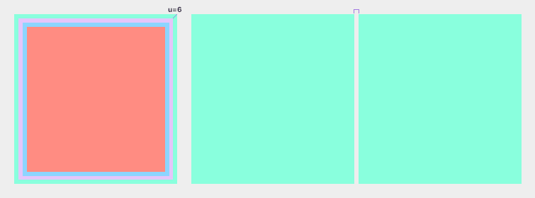
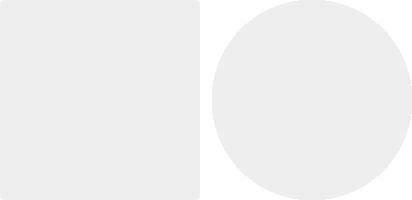
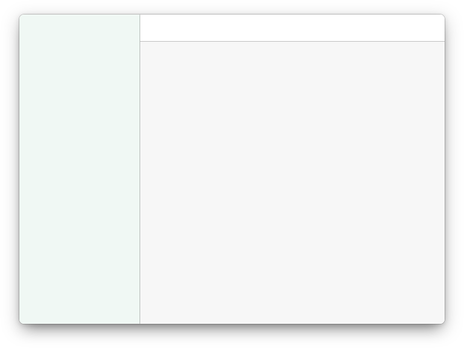
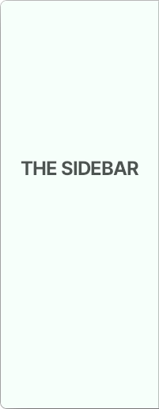
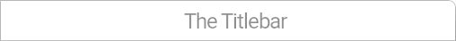
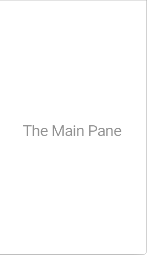
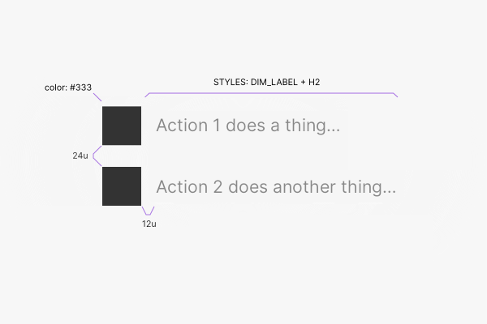
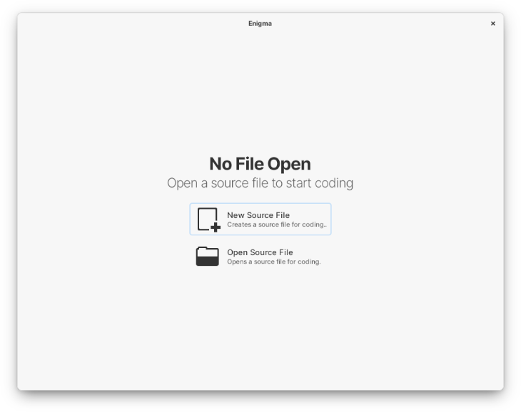
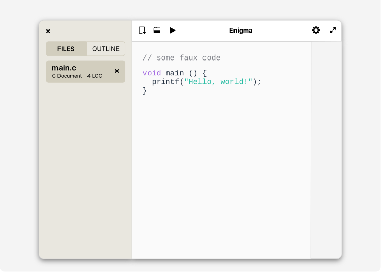

So, what is solo? solo /'so.lo/ is a Design System implemented by me to unify my projects to create a strong
visual identity atop the laurels of elementary OS's golden design. So, what does solo do, that others don't?
Creates a fresh new experience
Makes apps familiar to use
Reduces visual clutter
Strong-arms an opinionated design
Color
Color in solo is used very, very sparingly to aid in accenting an app rather than making it a visual circus.
Apps designed with solo also don't have more than one color. Different shades are accomplished with black or
white mixing with the accent color chosen.
Note: the below palette colors are just for show. You'll want to mix the base color you chose that is roughly
on the 500-tier, with #151515 to get darker tones and #F7F7F7 to get lighter tones.
Rossi
Sienne
Chernov
Durban
Jalisco
Fairway
Valle
Halley
900
#271B1B
#2C221E
#2C291E
#1F2618
#102922
#1E262C
#1D1D27
#151515
700
#5F4D4D
#685851
#686351
#535E48
#306962
#525E68
#50505F
#333333
500
#D07070
#FF976B
#FFE16B
#74C02E
#60C9C2
#70C0FF
#6060C5
#888888
300
#E2ACAC
#FBCCB8
#FBECB1
#BCDE9D
#B0E9E2
#ADD9FB
#B3B3E1
#EEEEEE
100
#F7E5E5
#FFF0E9
#FFFEB9
#EBF6e0
#F0F8F4
#E3EFF9
#E8E8F2
#F7F7F7
Text
For text sizes, you already are seeing solo in action on this website. The headers are just the way they should
be in solo, and text also is following the design. But as a refresher, here they are.
Note: In solo, rarely Large Title, Subtitle, and Callout are used, they're here for legacy purposes
from elementary OS's styling.
Large Title
24pt Bold
Title
18pt Light
Subtitle
14pt Bold
Header
9pt Bold Small-Caps
Callout
10pt Bold
Body
13pt Regular
Footnote
13pt Regular Dimmed
Quote
18pt Italic Light
Spacing
In solo, Spacing is based on units (u) of 6. The scaling system uses fractions and multiples of the base size
(6u or u/6). The result is easy to understand. Here's a nifty image showcasing spacing. Spacing also should
never exceed 30u from one element to another one (nested or otherwise.)
Note: u is roughly the same as 1dp (device pixel).

Shapes
In solo, there's only two shapes to choose from, the square with 8px corner radius, and the circle. Both are used
in the same app, but the circle is reserved for avatars or account images only. Do not use triangles or other funky
shapes.
Note: circles when used as account pictures, are the only Widget that has shadow cast on it, besides
the Cog's menu popover.

Window

So, with all that out of the way, let's start detailing the main differences that solo brings. The first of which
is a Window's design and layouting. As you can see, in solo, the window layout is pretty standard, but it has
some very unique design opinions. Corners are rounded to 8px, and the overall look feels airy.

Sidebar
In the sidebar, which is full-height and colored with the 100-tier color, you'll want only the close button to show
via an empty titlebar, as well as make sure all items are fit snuggly inside the main part below this titlebar. All
items in the main part should be accompanied by a header of what the items are in Header styling. Be it listboxes or
sourcelists or whatever.
Sidebar Listboxes
Listboxes in a sidebar should follow a design cue of using the 300-tier color as the border, or when hovered, both
border and background; of the whole box, as well as 8px corner radius; This is to ensure they fit onto the System.
Sidebar Badges
Badges, when not textual, should be circular, and use full-color (as in, you should let the user choose their color
themselves.) But if textual, this should use the 300-tier color and the text inside be black.
Sidebar Sourcelists
Sourcelists are expandable tree-like lists with children text inside children text. These should be configured to
never show expanders and only show them if needed, to the right of the expandable header.
Sidebar Back Button
When an app has multiple spatially horizontal views, a back button is needed; add it to the sidebar titlebar, and not
the main titlebar. This button has the same background color as the sidebar, with the 300-tier color as its border.

Titlebar
The titlebar, the hallmark place where you'll put your app's actions in… But wait, in solo, you should follow some
basic rules to make it work wonderfully for your user. The background color should be #FFF in light mode, and #000
in dark mode.
Searchbars always as the first thing from left to right. They take the 3-action spaces, so move your primary action
and secondary action to the right side, and subsequent actions go to the Cog.
If the 3-actions on the left are important, put your search inside an icon.
At most 3 action buttons per side, and others tucked inside the Cog.
Title should be extra bold and be of the app's name.
This is where the maximize/fullscreen button should be.
Ideally, all iconography should be monochromatic, and pixel-fitted.
The Cog
This button, which should always be the last thing in the titlebar from left-to-right, is where you'll put additional
settings and actions that would break the 3-actions rule above. But why Cog as the name? Because you'll use a
cog icon to show it to the user. None of that mystery burger or three-dots nonsense. Users will see the Cog and
instantly know what it is.
Actions
Actions on the titlebar are monochromed to #333 in the light mode, and #FFF in dark mode, and are outfitted with
a pixel-fitting icon. If this action on the titlebar is of a destructive action, such as "Delete all notes…", then the
action is colored with Rossi 500 (#D07070) on hover, to emphasize its destructiveness. Also don't forget to add a Dialog
associated with the destructive action, requiring a confirmation of destruction.

Main Pane
This is where you'll further layout your app's functionality, observing the use of h2 titles for sections and welcome
screen titles. Basically where your app's task becomes evident. Don't forget to make every entry have a corner radius
of 8px, and to make sure to use titling correctly. As well as respect the system light/dark modes and style the background
color to be #F7F7F7 and #151515 respectively.
Save State
Also, don't forget that your app has to save every little thing the user does with it, to make closing your app behave
the same as if the user minimized the app. Sidenote: Minimizing a solo app is useless due to this. Closing it should
do the same, saving your user's life and becoming a frustration-less experience.
Welcome View
This is where you'll welcome your users to your app. Show them how to start your program, by adding rows in a grid in
this way: A 48px sized icon followed by a dimmed Title-styled label, both pertaining to the main action in your titlebar
(the one on the left). It's known Granite from elementary OS has a Welcome widget, but it imports non-solo styling, so
it's best to avoid using it if designing your app with solo. The label should explain what that main action does in
sentence-casing, ending in an ellipsis (…).

Example App
In this section I will show a barebones app called Enigma (not coded, just a mockup) that showcases all the patterns
of solo, applied to a code editor.

When users open up Enigma, they are treated to the solo Welcome View. This view guides them to open a new file
previously saved, or to start a new one. Note the Sidebar's empty state which is a "No files…" Title label. When
we open a file, or add a new one…

Then it all starts. There's the Sidebar, showing a pane switcher and a file box, this box with a title, a subtitle
and its remove button. The Titlebar, has new file, open file, run file as primary actions and the Cog on the right
side. As you can see, the contents of the sidebar are always centered, leaving margins on both sides. The pane
switcher graciously blends in with the Sidebar as well as the file box.